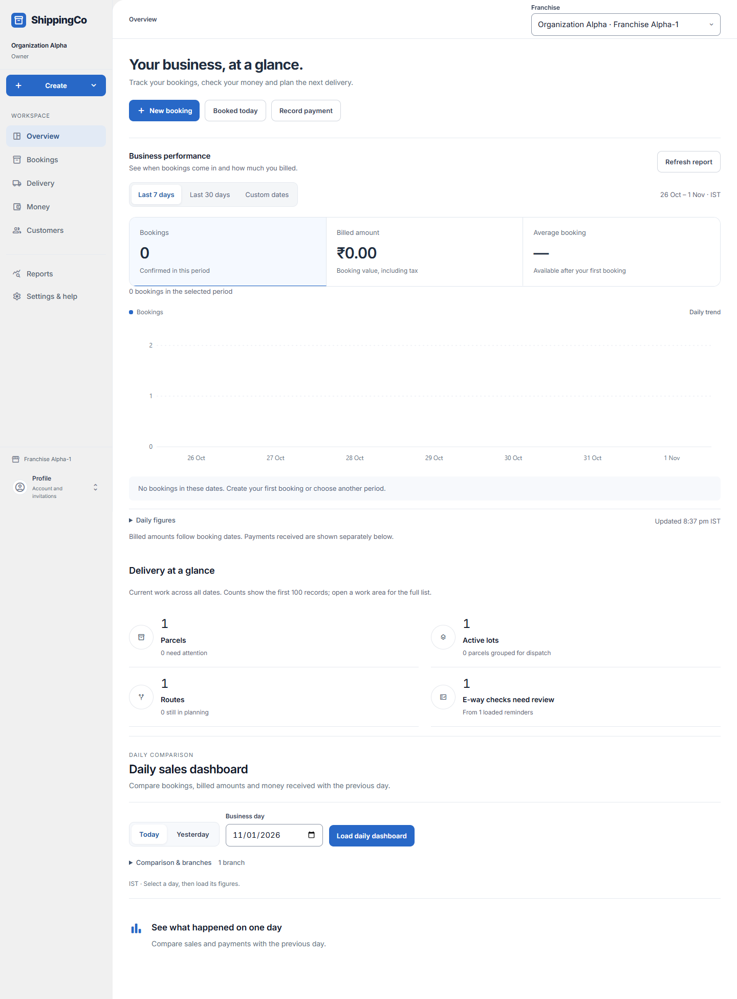

Overview and daily figures
What this helps you do
See bookings, billed amounts, payments and work waiting for your team.
Before you start
Sign in and choose the correct branch. Your access decides which actions you can use.
Open the next task and inspect daily evidence
- Open Overview and confirm the Franchise shown at the top. New booking starts booking entry. Booked today opens the Packages list for today. Record payment opens Money receipts. Actions depend on your role.
- For permitted finance staff, Business performance loads a booking trend. Last 7 days or Last 30 days changes the period. Custom dates shows Chart start date and Chart end date; choose up to 31 days ending today or earlier and select Apply dates.
- Choose Bookings or Billed amount to change the chart. Billed amount includes tax and follows booking dates. Average booking divides that billed amount by the booking count; it is unavailable when there are no bookings. Expand Daily figures for exact day-by-day values.
- Delivery at a glance covers current work across all dates. Select Parcels, Active lots, Routes or E-way checks need review to open that work area. Counts cover the first 100 loaded records; a plus sign or more-pages note means more records are available.
- In the daily dashboard, select Today, Yesterday or a Business day, then Load daily dashboard. Expand Comparison & branches to choose Same time of day or Full previous day and the permitted branches. The current branch remains included.
- After loading, select a Bookings, Billed amount or Money received figure, including a previous-day figure, to inspect its source rows. How customers paid lets you select a payment-method amount. Money received includes payments for older bookings and advances.
- Expand Report dates & calculation details for capture, expiry and cutoff times. More business figures reveals additional metrics; Show key figures returns to the shorter view.
- View source records & download contains the saved evidence. All selected-day sources clears a metric-specific view. Next source page loads another page. Download matching CSV is offered only with export permission.
- Refunds are shown separately and reversals may reduce a payment-method total. A missing percentage is not zero growth. Load a new dashboard when you need later evidence; old saved figures do not update themselves.
Quick steps
- Open Overview.
- Choose Last 7 days, Last 30 days or Custom dates in Business performance.
- Choose Bookings or Billed amount to change the chart. Open Daily figures for exact numbers.
- In Daily sales dashboard, select a business day and load its figures.
- Select an amount to see the records behind it. Download the matching CSV if your role allows it.

Current app screen with synthetic review data. Names, references and amounts are examples, not customer records. Select the image to enlarge it.Fields and choices
- Chart start date / Chart end date: For custom dates. Choose up to 31 days, ending today or earlier.
- Business day: The day to compare. The daily report uses India time.
- Compare with previous day: Same time of day gives a time-matched comparison. Full previous day uses the whole earlier day.
- Branches included: Choose only the permitted branches. The active branch stays included.
- Bookings: Number of bookings in the period.
- Billed amount: Value billed, including tax. This is different from money received.
- Money received: Payments recorded in the period, including payments for older bookings and advances.
What to check
- Delivery summary counts use the first 100 records. Open the work area for the full list.
- Saved figures do not update themselves when new evidence arrives. Load a new report.
- A missing comparison percentage is not the same as zero growth.
- A failed report is not proof that the business had no activity. Retry it.
About this guide
Checked against the web app source on 1 November 2026. Examples are not real business records.